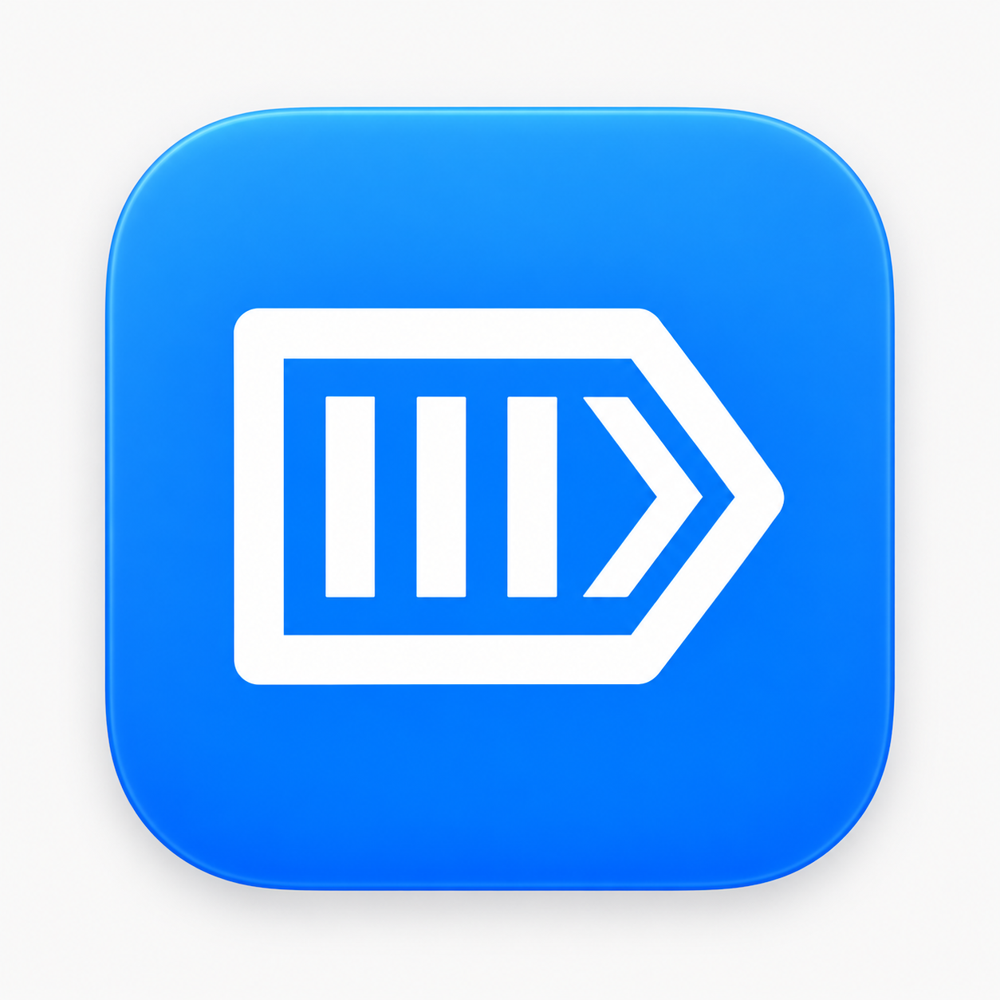
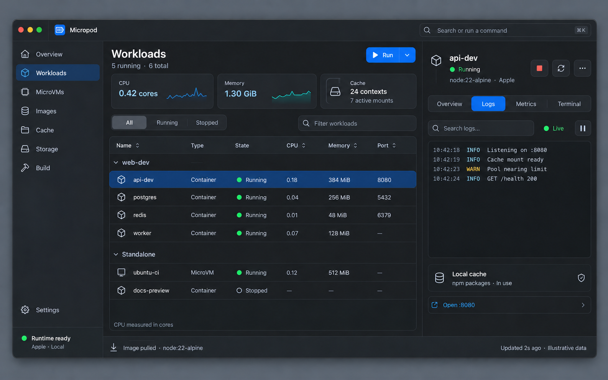
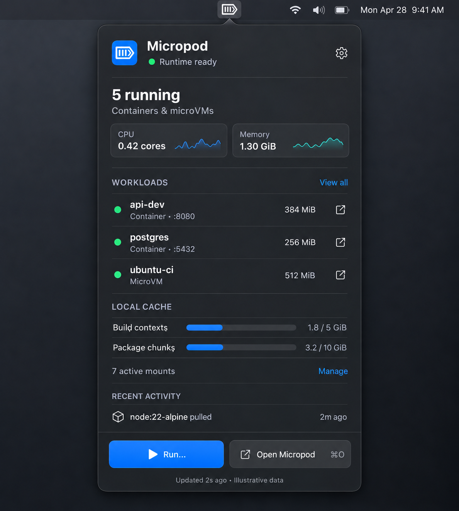
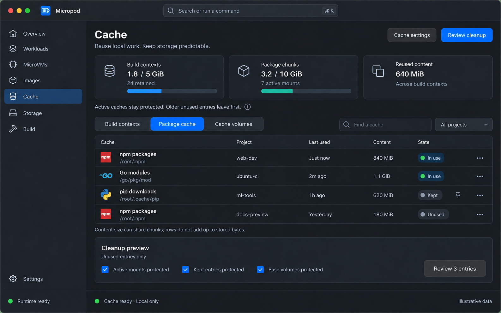
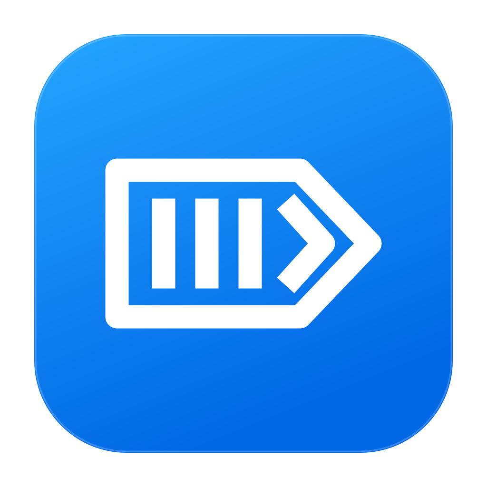
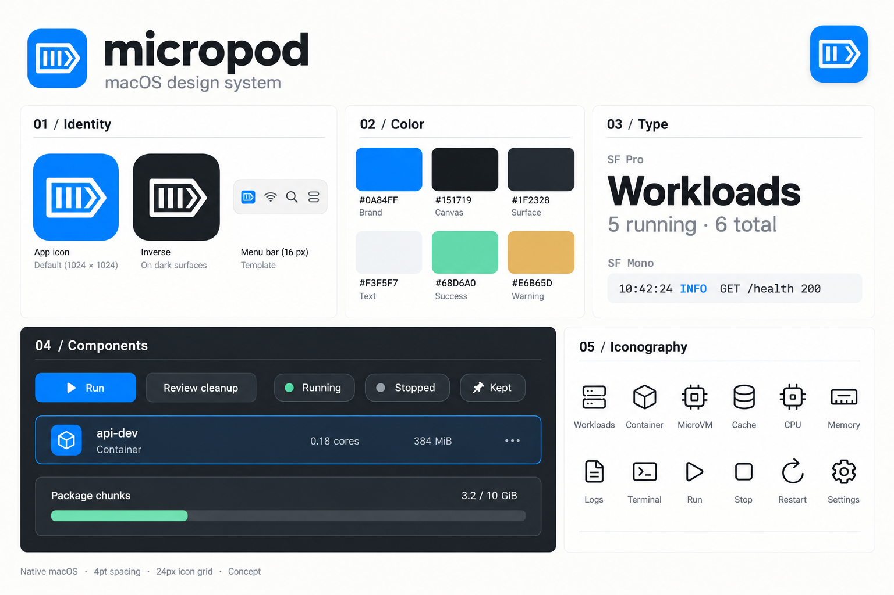

App icon concept is arriving.
Generated raster artwork.
App icon conceptPNG ↗

Raster exploration · imagegen
A design concept for navigating workloads, reading their signals, and understanding what Micropod keeps cached.
Generated visual references. Illustrative workload and cache data.

Keep running containers and persistent machines in view while inspecting logs, metrics, files or terminal. Type and engine labels preserve the difference between Apple, Docker and sandbox workloads.

Runtime health, CPU and memory sit above workload shortcuts. Separate build-context and package-cache budgets make retention visible; the main app handles deeper inspection.

Separate build contexts, shared chunks and clone-backed volumes. “Keep cached” and cleanup review are proposed controls; implementation must protect active work and shared references.
Continue the pod and terminal identity. Blue for the app; a monochrome template for the menu bar.


Give it space.Clear space is one quarter of the mark width. Keep runtime badges beside the mark.
Keep it recognizable.Minimum size: 16 pt for the template mark; 24 pt for a lockup. Use the mark alone at small sizes.
Use the right source.SVGs define exact geometry. The generated icon explores finish and may differ from the vector master.
Semantic color, native typography, compact density, and explicit states.
Values follow the current appearance. Brand blue remains #0A84FF.
Series are labeled separately from runtime status.
Use system fonts. Tabular digits for metrics; monospace for logs and identifiers.
Every state has a text label. Stopped and unavailable readings use an em dash; stale data retains its age.
Consumed cores are independent of host core count. Every Apple container already runs in its own isolated microVM.
640 MiB content reused across contexts is logical reuse, not physical disk saved.
Selectable output, bounded history, a clear Live/Paused control and preserved scroll position.
Filled actions use #0067CF with white labels in both appearances. Destructive operations include explicit consequences.

Generated board for visual direction. The editable SVGs, semantic tokens and written design-system rules define the authoritative geometry and values.
Original 24 pt geometry · 1.75 pt stroke · round caps and joins · currentColor.